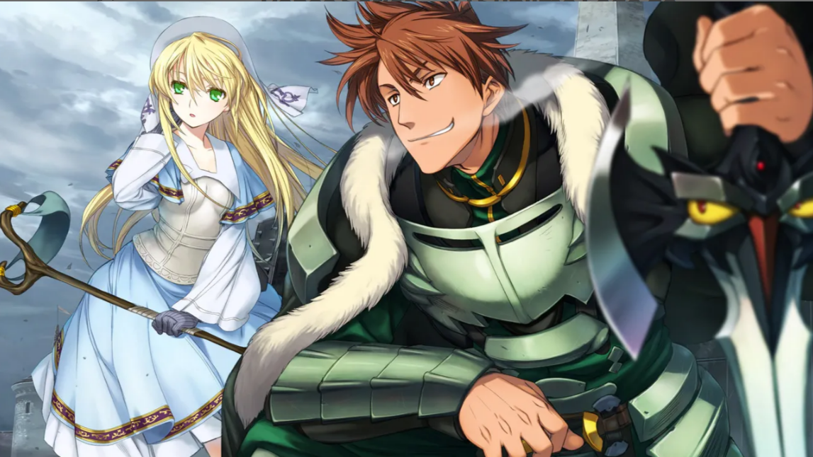
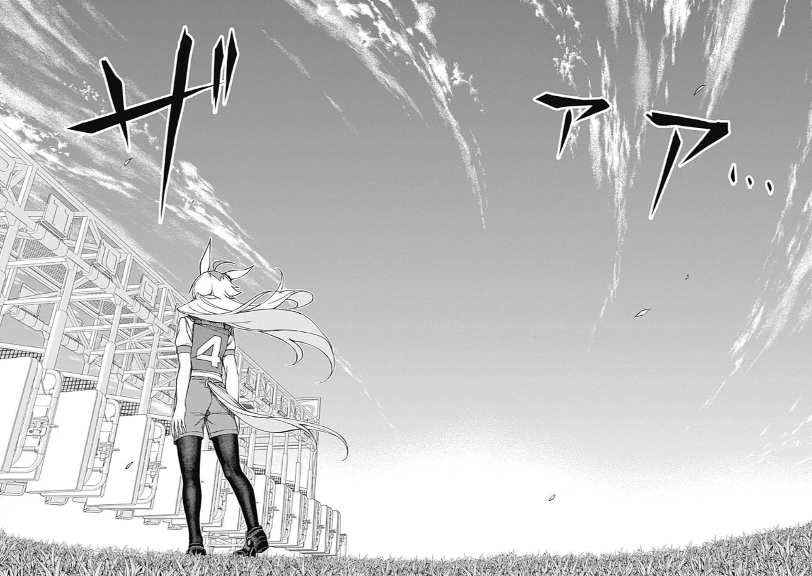
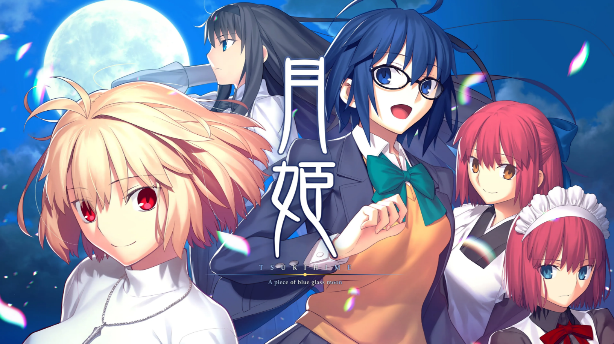
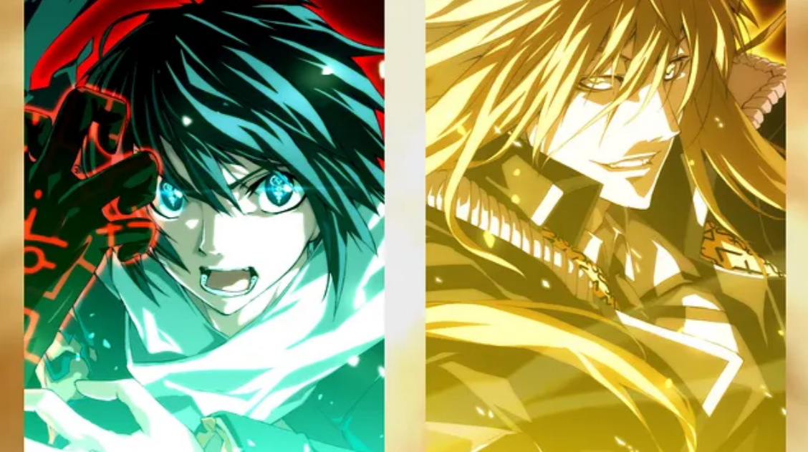
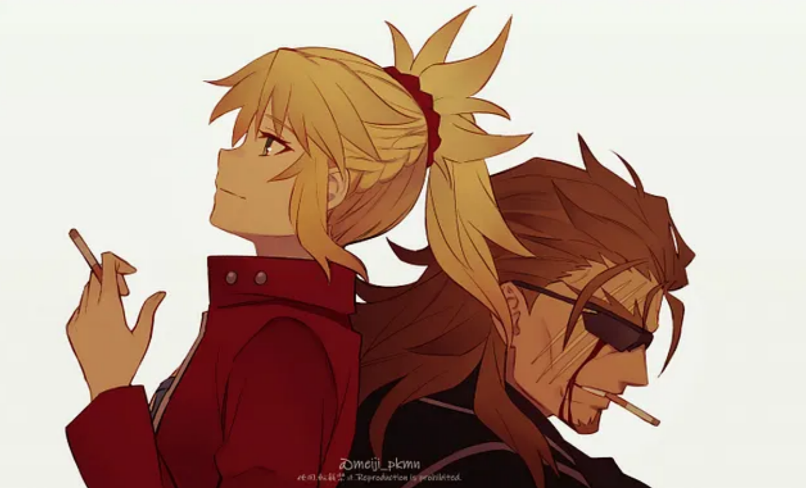

Feripe Review's

Rance Series — O Sublime Lado da Perversão
Uma Analise e Concepção da serie de jogos Rance da Alice Soft.

Uma Musume — Nascidas para Correr
Uma Analise e Concepção da serie e animação Uma Musume da Cygames.

Tsukihime — A Piece of Blue Glass Moon
Analise e Concepção de Tsukihime ‘Remake’ — Near Side of the Moon de Kinoko Nasu

Kara no Kyoukai — Além das Fronteiras
Analise e Concepção de「Kara no Kyoukai」de Kinoko Nasu

Dies Irae — ‘Assim Falou Dies Irae’
Uma concepção de Dies Irae em relação a 'Also Sprach Zarathustra'

Mordred Pendragon — Desilusão e Realização
Analise de personagem Mordred Pendragon — A Tragédia do Cavaleiro da Traição